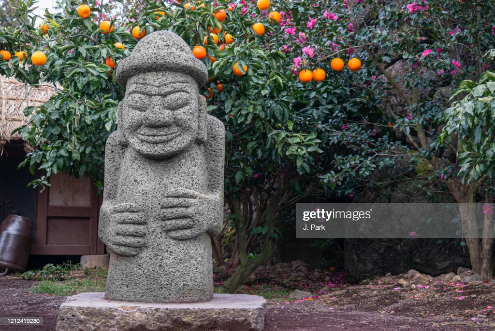

Pulau Jeju
Pulau Jeju dijuluki Samdado, "Pulau yang Berlimpah dengan Tiga Hal" yaitu, bebatuan, wanita dan angin. Karena memiliki keindahan alam dan kebudayaan yang unik, Pulau Jeju adalah salah satu objek wisata paling terkenal di Korea. Dalam catatan sejarah, Jeju disebut dalam berbagai nama, mulai dari Doi, Dongyeongju, Juho, Tammora, Seomna, Tangna atau Tamra
